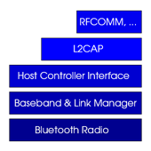

Implementace
 Vyšli jsme z jednoduchého příkladu rs232d, který je distribuován s NutOS. Jedná se o most mezi telnetem a sériovým portem. Při pohledu na Bluetooth modul a signály RX, TX láká představa, že všechna data co do Bluetooth modulu pošlu vyletí vzduchem. Tato představa je však zcela milná. Musíme být schopni navazovat spojení, zvolit zabezpečení, nastavit jméno, zviditelnit se, ... . Proto je zde nutno implementovat Bluetooth stack který je podobný OSI modelu.
Použili jsme Bluetooth stack z projektu BlueMP3, ze kterého jsme použili a portovaly vrstvy HCI a L2CAP.
HCI
HCI (Host Controller Interface) je nejnižší softwarová vrstva. Vrstva pracuje s různými
druhy paketů. Směrem dolů komunikuje s Bluetooth modulem přes uart, který je již v NutOS
implementován. Stačí pouze nastavit správnou rychlost (115 200 kb/s). Pak stačí zavolat funkci
hci_init(). V ní je realizováno počáteční nastavení modulu
(reset, zabezpečení [pin], nastavení jména, zviditelnění se, ...).
Vyšší vrstvě je předána callback funkce bool_t hci_event_callback(hci_event_t *event).
L2CAP
L2CAP (Logical Link Control and Adaptation Protocol) je obdobou UDP. Umožňuje vyšším protokolům (RFCOMM, SDP, vlastním) používat Bluetooth komunikaci nezávisle na sobě prostřednictvím portů. Stejně jako u UDP není garantováno 100% doručení. Vyšším vrstvám (programátorovy) poskytuje funkce pro příjem a odesílání paketů.
void l2cap_receive(hci_l2con_t *l2con, u08_t *buffer, u16_t len)u08_t l2cap_receive_u08(hci_l2con_t *l2con)void l2cap_send(hci_l2con_t *l2con, void *buffer, u16_t len)
Aplikační vrstva
Možné řešení je implementovat standardní vrstvy SDP a RFCOMM a pak používat virtuální sériový port. My však řekli ne. Zvolili jsme vlastní PSM port APP_PSM 0x1023 (definováno v hci_callback.h) a používáme přímo l2cap funkce send a receive.
V samotném programu (souboru bt2tcp.c) jsou 2 vlákna. Hlavní které nastaví uart, Ethernet,
inicializuje Bluetooth modul, čeká na TCP spojení a realizuje vlastní přenos dat z TCP do L2CAP funkcí
void eth2bt(). Druhé vlákno realizuje přenos dat z L2CAP vrstvy do TCP voláním funkce
void bt2eth(). Tato funkce volá hci_process(HCI_PROCESS_IDLE), která přes již
zmíněnou callback funkci kopíruje data do otevřeného TCP streamu.
Ladění
Pro jednoduší ladění při vývoji a experimentech jsou použity debug makra / funkce (soubory debug.h a debug.c)
která vypisují informace na připojený telnet terminál. Snadným zakomentováním #define DEBUG
v souboru debug.h vypneme ladící výpisy. Musíme si uvědomit, že režije ladících výpisů je poměrně velká
a to způsobuje chyby (procesor nestíhá) při Bluetooth komunikaci. A proto pro korektní běh testovací aplikace
BlueNET je nutné vypnout ladící výpisy.
vypnuty.
Testovací aplikace
Pro otestování jsme stvořili (upravili) Linuxovou utilitku, která demonstruje obousměrné spojení s BlueNET.
Pro zkompilování a běh je vyžadována BlueZ knihovna. Spouští se s 2 parametry l2send bdaddr file,
kde bdaddr je "MAC" adresa Bluetooth modulu a file je soubor, který na vyžádání
poskytuje. Rozeznává 2 (respektive 3) příkazy.
- file - pošle soubor zadaný jako parametr
- exit - odpoví 'sayonara' a odpojí se od Bluetooth
- 'cokoli jiného' - odpoví 'Unknown command' a očekává další příkaz
Tyto příkazy očekává od L2CAP vrstvy (tj. od BlueNET firmare). Nejlepší způsob je připojit se k modulu pomocí telnet klienta putty na adresu 192.168.1.100:23.
Videozáznam telnet komunikace demonstrující použití.